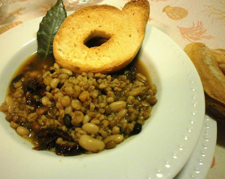
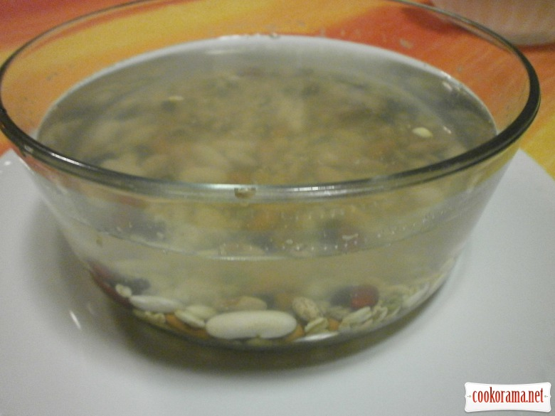
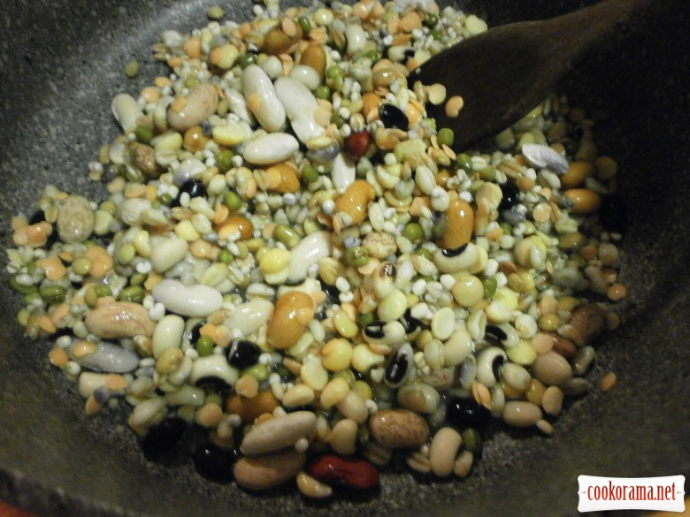
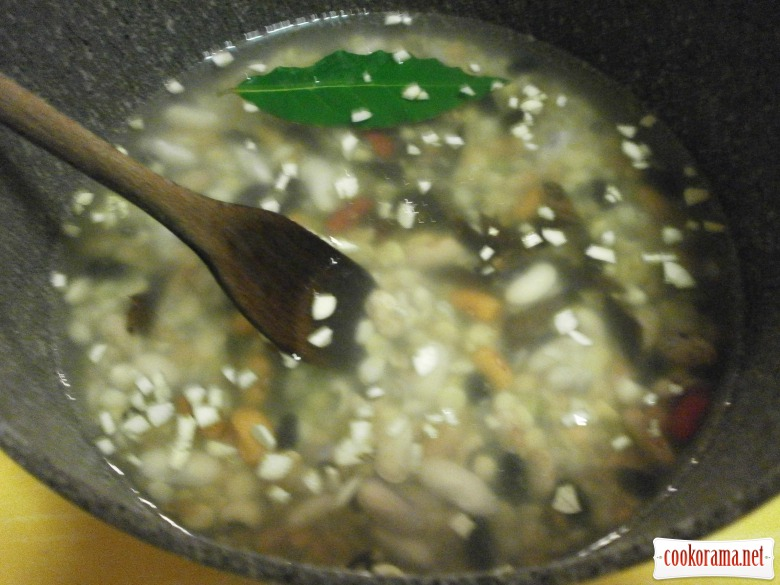
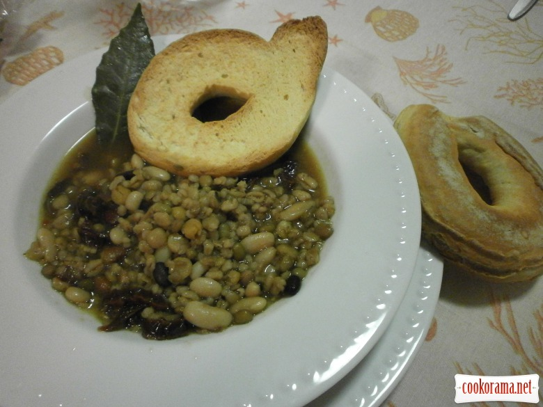

Мінестра із суміші бобових

Інгредієнти: суміш бобових (квасоля, горох,крупа) 5 ст.ложок часник (зубки) 2 шт. томати в'ялені 3 шт. лист лавровий 1 шт. олія 2 ст.ложки вода 1 л сіль перець чорний мелений Розраховано на 2 порції
Кулінарний рецепт мінестри із суміші бобових
Залийте бобові водою і залиште на 5 — 7 годин.

Злийте воду. Помістіть в каструльку бобові, залийте 1 л. води. Додайте мілко насічений часник та нарізані в'ялені помідори. В'ялені помідори можна замінити на томатну пасту — концентрат, трохи кислоти не завадить.

Влити олії, додати сіль, перець, лавровий лист. Варити 50 — 60 хв.

Як бачите, зварити цей апетитний суп дуже легко. Смак і користь я вам гарантую, та й економію теж!

Смачного!